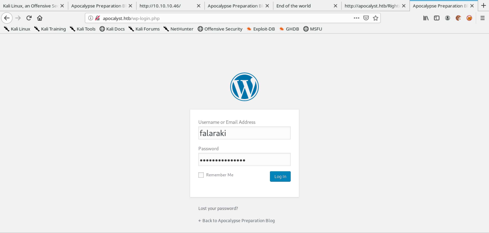
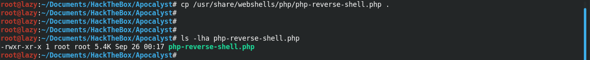

August 13, 2021
In this tutorial we will see how to get a reverse shell on a WordPress server by editing a theme. The assumption is that we already have administrative access to the WordPress server which allows us to edit a template.
Let's login to the WordPress server.
Upon a successful login, we will see the Dashboard page.
On the sidebar, hover your mouse over "Appearance" and then click on "Editor".
From the drop-down list on the top-right corner, select a theme to edit which in this case is the "Twenty Seventeen" theme and then click on a template to edit which in this case is the 404 Template (404.php).
Now we need a PHP reverse shell to insert into the template code. So, let's copy a PHP reverse shell that comes in Kali Linux to our working directory (this step is not really necessary).
We modify the PHP reverse shell by entering our own IP address and the port on which we will be listening.
After copying the PHP reverse shell, we paste it into the template file.
And then we click on "Update File".
WordPress displays the message that says "File edited successfully.".
Now that the template file contains our PHP reverse shell code, we can run the reverse shell by browsing the template file via a browser such as Firefox, Chrome, etc. or we can also trigger the reverse shell by using wget.
Please note that we have to have a listener running before we trigger the reverse shell in the previous step. Running nc -lvnp 1234 creates a listener and when we trigger the reverse shell code, we receive a connection from the target. Now we have access to the WordPress server with the privileges of "www-data".